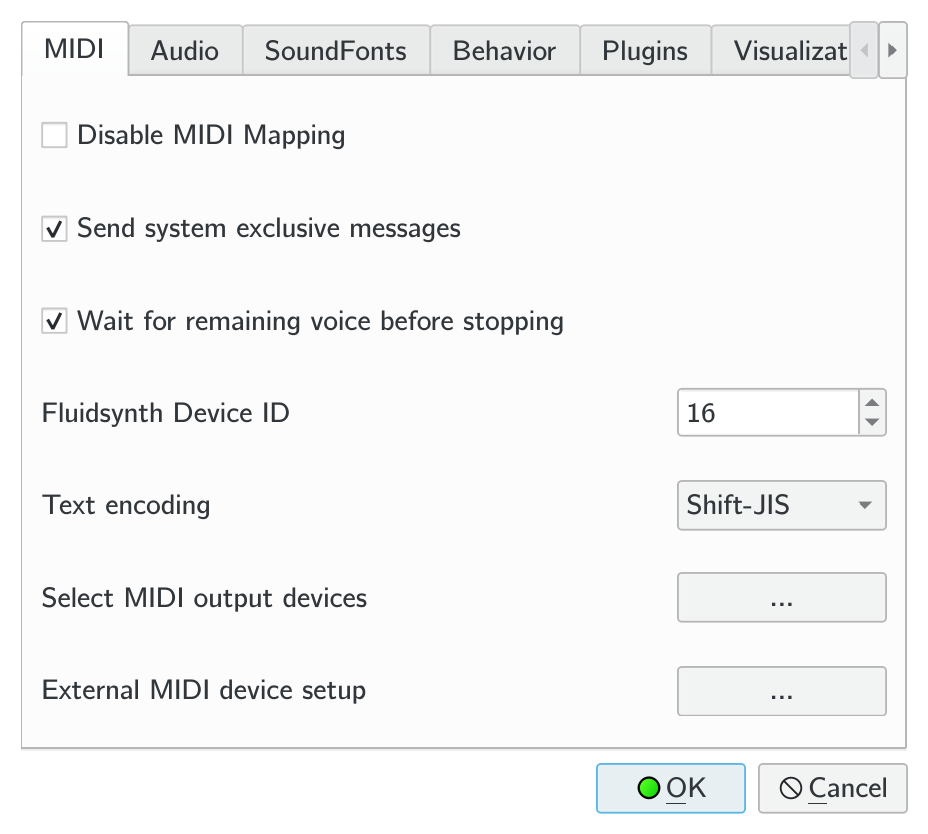

Settings Dialog
Settings are stored in $HOME/.config/qmprcFor Windows users, $HOME refers to X:\Users\<your user name>\.config, where X is the system drive of your Windows installation.
Options with one asterisk will be applied after restarting QMidiPlayer.
Options with two asterisks will be applied after the internal fluidsynth is restarted.
Other options are applied immediately.

- Default Output Device*: specify the default midi device to use.
- Disable Midi Mapping*: only use the default output device.
- Send SysEx: whether to send system exclusive messages or not.
- Wait for remaining voices before stopping:
If checked, the player will not stop until the current polyphone reaches 0.
Otherwise it will stop immediately after the last event is sent. - Text encoding: text encoding used in the midi file.
- Audio Driver**: specify the audio backend used by the internal synthesizer.
- Audio Buffer Size**: Size per buffer used by the fluidsynth engine. Increase if experiencing audio interruption, decrease if audio is laggy or messed up.
- Audio Buffer Count**: Number of buffers used by the fluidsynth engine. Increase if experiencing audio interruption or messy audio, decrease if audio is laggy.
- Audio Format**: audio output format of the fluidsynth engine.
- Audio Frequency**: audio output sampling frequency of the fluidsynth engine.
- Max Polyphony**: maximum simultaniously played voices of synthesizer. High polyphony limit may cause lags.
- CPU Cores**: threads used by the internal synthesizer. Too many threads may result in instability.
- Auto bank select mode:
If checked, the player will choose the appropriate bank selecting mode according to the file standard. If the file doesn't specify the standard the player will fallback to the default bank select mode. Otherwise the player will only use the default bank select mode. - (Fallback) Bank Select Mode: the default bank select mode.
You can manage soundfont used by the internal fluidsynth engine here.
If multiple soundfonts provide instruments with the same bank numbers and preset numbers, the preset provided by the top most soundfont will be used.

- Restore last playlist on startup*: If checked and QMidiPlayer is started without files to open, the playlist from the last session will be used instead of an empty playlist.
- Load files in the same folder*: If checked, QMidiPlayer will add all midi files in the same folder to the playlist when started with a file.
- Save dialog status*: Save dialog positions and restore on start up.
- Save parameters in effects window
- Persistent fluidsynth instance*: If checked, the synthesizer engine will keep running through the whole session. Otherwise it is restarted every time when a new song is played.
- Icon Theme: Leave it unchanged unless you can't see the icons on those buttons.
Plugin manager. View details of plugins, enable or disable them here.
Enabled plugin list is applied after a restart.
Plugin scanning follows the order below:
- (*nix) /usr/lib/qmidiplayer
- The folder containing QMidiPlayer's executable file.
Return